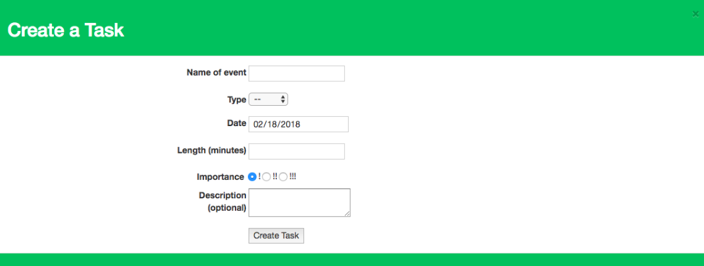
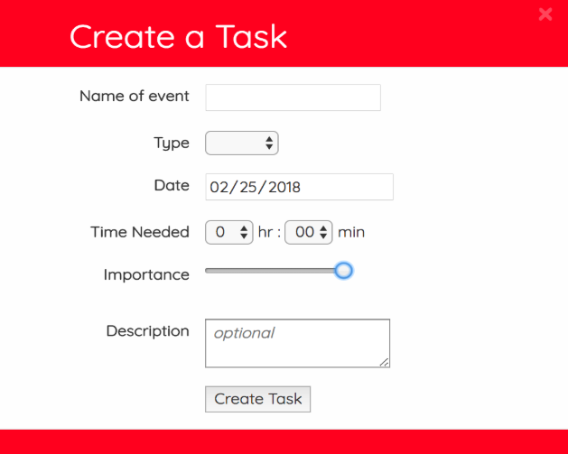
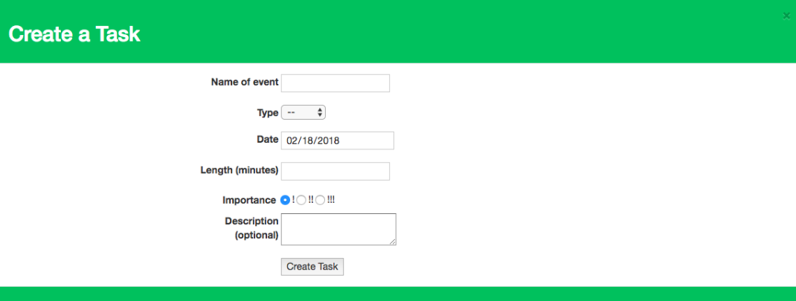
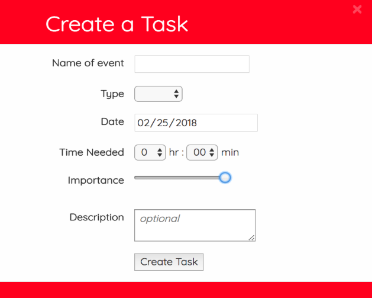

Students’ biggest pain of their current modes of organization was
difficult accessibility and usage.
They spent too much time organizing the tasks than actually executing them as it didn't actually help them prioritize all the tasks. Moreover, many people used multiple methods of organization to keep track of all the different tasks in their lives, which was inefficient as they had to navigate back and forth between their applications.


 


